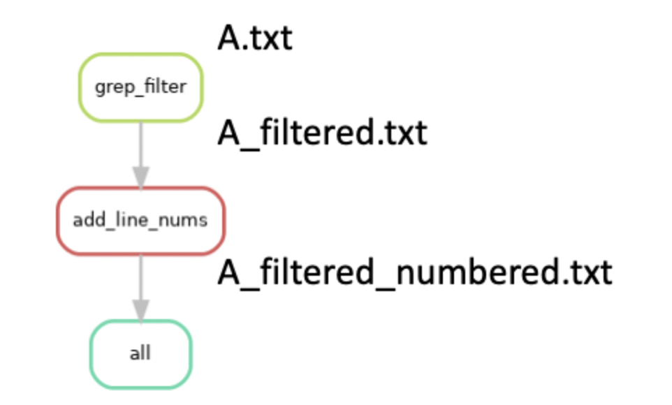
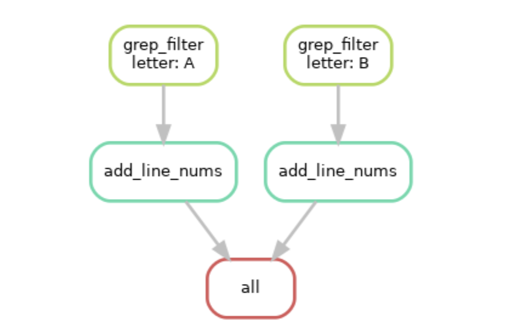

Assignment 0: snakemake
This assignment is not graded or checked, but I’m happy to discuss it with you if you have any questions or feedback. Use it in combination with the official documentation (https://snakemake.readthedocs.io/en/stable/) to familiarize yourself with snakemake.
0.6 Setting up your working directory
In your previous courses, you should have received some experience working on the SCC. For this class, the cluster will be essential since the scale of our data and resource requirements of the analyses necessitate the use of a high performance computing environment.
Navigate to our class directory, /projectnb/bf528/students/ and create a directory for yourself there if it doesn’t already exist. These directories are private and only viewable by the TAs and the instructors.
Copy the directory /projectnb/bf528/materials/assignment_0/ to your student directory /projectnb/bf528/students/your_username/assignment_0/ This directory will serve to contain all of the files and processed files generated in the course of your analysis for this small assignment.
0.7 Conda Environments
As we discussed in class, conda is a package management tool that enables you to create custom computational environments and automatically installs dependencies. We will use conda environments to make our workflows for each analysis as reproducible as possible by creating independent and self-contained conda environments. The full description of all packages and their versions installed in a conda environment can be exported, and used to rebuild the same exact environment at a later date, on a different computer or both.
In order to use Conda (miniconda) on the SCC, you will first need to load the pre-installed module for miniconda and perform a few setup steps:
1. Enter the command 'module load miniconda' on the SCC. There will be a
helpful pop-up message that will instruct you to run the script
setup_conda_scc.shThis script will allow you to change the location where the packages conda installs are downloaded. By default, conda will save them to your personal directory on the SCC. As you are limited to only ~10gb in your home directory, you should choose to instead save them to a larger partition.
2. Change the default install location for your conda environments to be your
directory on our class partition: /projectnb/bf528/students/your_username/There are more instructions for general conda usage and the SCC here: https://www.bu.edu/tech/support/research/software-and-programming/common-languages/python/python-software/miniconda-modules/
Now that miniconda is loaded as a module and configured to save your environments to our class partition, you will need to create your first conda environment. We will start with a simple conda environment that only contains snakemake. Please look at the following command and run it:
conda create --name snakemake_env -c conda-forge -c bioconda snakemake
This command instructs conda to create an environment called snakemake_env
using the –name option.
The -c option specifies which channel to install packages from. Channels are where packages are stored and are made up of software packages maintained by many contributors. For our purposes, we will primarily be using conda-forge and bioconda, which host a majority of cutting-edge and well-maintained tools for computer science, and bioinformatics. The order is important, and it has been agreed upon by developers and maintainers of these channels that conda-forge should be specified first, and bioconda second. This will prevent any dependency conflicts and ensure conda maintains your environment properly. In general, conda-forge contains many libraries and dependencies and bioconda typically houses software packages for biomedical research.
The last input is what package we want installed and if we were requesting more than one, you can simply list all of them (separated by a single space).
This command will only have created this environment with the specified packages. After conda has finished creating the environment, we still need to activate it to enable us to utilize the packages installed within using the following command:
conda activate snakemake_env
At the beginning of your terminal, you should now see your environment name wrapped in parentheses (snakemake_env), which indicates what conda environment is currently active.
Every time you log onto the SCC, you will need to reload the module for miniconda and then activate your conda environment to make your packages and tools available before performing analyses.
Here is an official cheat sheet of commonly used Conda commands: https://docs.conda.io/projects/conda/en/4.6.0/_downloads/52a95608c49671267e40c689e0bc00ca/conda-cheatsheet.pdf. The official site also hosts a complete user guide for Conda covering installation, basic usage, and troubleshooting (https://docs.conda.io/en/latest/).
0.8 Snakemake
As we will discuss in class, snakemake is a powerful workflow management tool that enables us to develop automated and reproducible bioinformatics pipelines. To vastly oversimplify, a snakemake file is a series of instructions, encapsulated in rules, that specify how to generate specified output files from input files.
All of the projects in this class will ask you to develop a series of snakemake workflows that are capable of performing the majority of the processing steps for each experiment.
The assignment_0 directory you copied to your folder should have the following structure:
assignment_0/
|-- single_example/
|-- A.txt
|-- single.snake
|-- multi_example/
|-- A.txt
|-- B.txt
|-- multi.snake
|-- your_snakemake/
|-- A-group1.R1_001.txt
|-- B-group1.R1_001.txt
|-- C-group2.R1_001.txt
|-- D-group2.R1_001.txt
|-- your.snakeThis small assignment will take you through two snakemake workflows to help familiarize you with some of its basic functionalities and principles and then ask you to complete a third snakemake file. We will step through the basics of snakemake by iteratively building the snakefile present in the single_example directory, single.snake, here in this document. This snakemake file performs a series of (likely familiar) basic operations on the text file named A.txt and generates a single output file after a series of sequential steps. We have also provided you an example of a snakefile that will run on multiple files in the multi_example directory. At the end, you will construct the contents of your.snake to run this same workflow on the four files found in the your_snakemake directory.
0.9 Rule all specifies the files you want your snakefile to produce
Navigate to the single_example/ directory, and you should see two files: ‘A.txt’ and ‘single.snake’. A snakefile is nothing more than a simple text file which follows general but modified python syntax and formatting. By default when run, snakemake will search for a file called “Snakefile”. However, snakefiles can be named any valid file name, though the convention is to typically use ‘.snake’ as the file extension.
Let’s take a look at the anatomy of a snakefile. By convention, the first rule
in the snakemake file is considered to be the target rule and by convention is
typically named rule all.
rule all:
input:
'A_filtered.txt'This rule will specify the expected output of this workflow (snakefile). You may notice that our target output is actually listed in the “input” directive of the rule. The rule all is special and serves to instruct snakemake that the other rules in the snakefile should produce this file. As a reminder, the file “A_filtered.txt” does not currently exist: the snakemake workflow will generate this file based on the rules contained within.
0.10 Components of a snakemake rule
Now that we have told snakemake what file we want created, let’s specify a rule that will actually instruct snakemake how to generate this file from our starting file “A.txt”.
rule grep_filter:
input:
'A.txt'
output:
'A_filtered.txt'
shell:
'''
grep -E "^[[:alpha:]]" {input} > {output}
'''Before we go into what this rule is doing, let’s look at the different parts.
1. Every rule needs to have a unique title. You can name these rules
however you like, but we recommend using brief naming conventions that
describe the general purpose (i.e. similar to how you would name
functions).
2.The input and output directives are used to specify files that are
expected to be used and created by the rule, respectively.
3. The shell directive is a string containing the shell command to run
to generate the output file from the input file. In our small example,
you can see that we are using the grep utility to extract only the
lines beginning with a letter and we redirect the output and write it
to a new file.
4. Snakemake is not limited to running shell commands. The run
directive can be used to execute and write any valid python code. You
can also call external scripts from within snakemake workflows. The “A.txt” file contains several lines of text and numbers. This rule will use grep to only extract the lines beginning with a letter and write that output to a new file called “A_filtered.txt”. At execution, snakemake will replace the contents of {input} and {output} with the values found in the directives, so {input} will become “A.txt” and {output} will become “A_filtered.txt”.
The actual command run will look like this:
grep -E “^[[:alpha:]]” A.txt > A_filtered.txt
0.11 Snakemake workflow with a single rule
rule all:
input:
'A_filtered.txt'
rule grep_filter:
input:
'A.txt'
output:
'A_filtered.txt'
shell:
'''
grep -E "^[[:alpha:]]" {input} > {output}
'''This is a small but working example of a snakefile. When this snakefile is run,
snakemake will be instructed to create the target file “A_filtered.txt” if it
doesn’t already exist in the current directory. It will do this by searching for
a rule whose output produces A_filtered.txt and based on our snakefile, it
will match the outputs in rule grep_filter and execute this rule, which takes as
input our starting file “A.txt” and performs a simple grep command + redirect to
generate our desired file “A_filtered.txt”.
0.12 Snakemake workflow with multiple rules
Now that we have gone over the basics of snakemake, we are going to add an additional rule to our simple snakefile. This rule will take the output of rule grep_filter, “A_filtered.txt” and perform another processing step on the text within and generate a new file named “A_filtered_numbered.txt”.
Let’s look at our snakefile with this new rule added:
rule all:
input:
'A_filtered_numbered.txt'
rule grep_filter:
input:
'A.txt'
output:
'A_filtered.txt'
shell:
'''
grep -E "^[[:alpha:]]" {input} > {output}
'''
rule add_line_nums:
input:
'A_filtered.txt'
output:
'A_filtered_numbered.txt'
shell:
'''
cat -b {input} > {output}
'''You can see a few things have changed. We have updated our rule all target to be the file “A_filtered_numbered.txt” and added the rule add_line_nums. If we were to run snakemake, it will now attempt to create the target file “A_filtered_numbered.txt”. It will find that the rule add_line_nums produces this file as an output, and then determine if the input file required for rule add_line_nums exists. If it doesn’t, it will look for another rule whose output produces this input. In our case, it will find that the rule grep_filter produces the “A_filtered.txt” file as an output and uses the file “A.txt” to generate it. Snakemake functionally works “backwards” from the requested target file to determine which rules need to be run in order to generate it. If we visualize all of these steps in the form of a graph, it would look something like this (with the files generated):

Importantly, if we had added the new rule add_line_nums, but kept our target file in rule all as “A_filterered.txt”, snakemake would only attempt to run rule grep_filter. This process of linking input and output files as dependencies is a critical feature of snakemake and enables the generation of workflows that consist of many steps that need to be run sequentially.
0.13 Running snakemake
Now that we have dissected the aspects of this simple snakefile, we will discuss how you run snakemake.
With your snakemake_env conda environment active, please navigate to the single_example directory containing single.snake and A.txt and run the following command:
snakemake -s single.snake --dryrun -p
The -s option indicates which snakefile to execute. By default, snakemake will look first for a file named Snakefile, but can be explicitly told which file to use using the -s option.
The –dryrun option instructs snakemake to only show a preview of what it plans to do based on the DAG without actually running them. Combined with the -p option, it will also print out the shell commands that will be executed.
After running this command, snakemake will print out what it plans to execute. You should see three jobs corresponding to rule grep_filter, add_line_nums, and all. If you remember, the rule all won’t actually perform any operation, it simply serves as a way to check that the target output file is successfully created.
To actually run this snakefile, we can use the following command:
snakemake -s single.snake -c1
This will instruct snakemake to run the rules within to generate our target output. The -s option specifies which snakefile to run (in case you have multiple) and the -c1 option instructs it to use 1 core.
Run this command and look at the contents of A_filtered_numbered.txt and compare it to what we started with in A.txt.
Please note that you should typically not run snakemake workflows on the head node. However, we have specifically designed the files and operations in this workflow to use a negligible amount of computational resources. We will discuss later in the class how to properly use snakemake in conjunction with the cluster and qsub when working with larger datasets and more complicated tasks.
Snakemake wildcards automatically detect file name patterns
In this toy example, it is immediately apparent that it’s not very practical or useful. In the time it took to write this code, we could have manually performed these same steps multiple times over. The real power of snakemake comes in the form of wildcards and their ability to generalize a rule to operate on a number of different files or datasets. Most real world experiments will have anywhere in the tens to hundreds of samples and snakemake allows for a powerful way to perform the same workflow on any number of files. For now, let’s see how we can use wildcards to generalize this snakefile to work on two files.
You can see that thus far we have very intentionally and explicitly named our output files. And when our original snakefile, single.snake, has finished running, we will have files named the following:
A.txt - Our starting file
A_filtered.txt - The output of rule grep_filter
A_filtered_numbered.txt - The output of rule add_line_numsYou can see that the files have a set pattern and that the one commonality between all of them is ‘A’, the name of the original file without the .txt extension. We intentionally created a naming pattern after transforming the file by appending ’_filtered’ or ’_filtered_numbered’ to denote what operation has been performed on the file.
Now let’s pretend we want our snakemake file to operate on two separate files. Move to the multi_example/ directory in the assignment_0 root directory. You’ll notice that we now have two files in our directory: A.txt and B.txt.
Our new snakefile, multi.snake now looks like this:
rule all:
input:
'A_filtered_numbered.txt',
'B_filtered_numbered.txt'
rule grep_filter:
input:
'{letter}.txt'
output:
'{letter}_filtered.txt'
shell:
'''
grep - E "^[[:alpha]]" {input} > {output}
'''
rule add_line_nums:
input:
'{letter}_filtered.txt'
output:
'{letter}_filtered_numbered.txt'
shell:
'''
cat -b {input} > {output}
'''The first thing to note is that in our rule all, we have now specified that we want this snakefile to produce two output files and we did this by simply listing both separated by a comma.
The only other change is that we have now inserted what’s known in snakemake as a wildcard in the form of {letters}. Instead of hardcoding the name of a single file, we have now created a means for snakemake to automatically determine the appropriate files to use by pattern matching. Snakemake uses wildcards, signified by curly braces {}, to indicate common naming patterns. On the backend, this wildcard is technically a regular expression, .+,that will match any number of characters up to a newline.
To make this more apparent, our two desired output files are:
A_filtered_numbered.txt
B_filtered_numbered.txtIf we wanted to capture this pattern in snakemake, it would look like this:
{letters}_filtered_numbered.txtAlthough we named our wildcard descriptively, letters, the actual name of the wildcard does not matter except for when we want to reference it. An alternative, and equally valid expression would be:
{filename}_filtered_numbered.txtThe important aspect is that the {} wildcard will match any pattern that ends in ’_filtered_numbered.txt’ and “remember” the values captured.
It will attempt to link rules that have matching outputs and inputs and will ultimately determine that ‘A’ and ‘B’ are appropriate wildcards that can be substituted into {letters}.
This is easier to visualize when we match our wildcard expression with the files we know will be created if we simply ran these steps ourselves:
A.txt
A_filtered.txt
A_filtered_numbered.txt
B.txt
B_filtered.txt
B_filtered_numbered.txt
{letters}.txt - Our starting file
{letters}_filtered.txt - The output of rule grep_filter
{letters}_filtered_numbered.txt - The output of rule add_line_numsYou can see that the values of letters that would match the files that will be created are ‘A’ and ‘B’.
Snakemake will propagate these values to every instance of the wildcard {letters} and properly substitute these values of ‘A’ and ‘B’ into every named instance of the wildcard letters in all rules. Make sure you are within the multi_example directory and run the multi.snake workflow using the following command:
snakemake -s multi.snake -c1
Graphically, it will perform the following tasks:

You can see now that snakemake will run our same series of steps, but on both files, ‘A.txt’ and ‘B.txt’ using the wildcard automatically inferred from our rules and files.
0.14 Other useful Snakemake functions
Now let’s look at a more complicated snakemake workflow that also performs some basic bioinformatics operations
Let’s take a look at this slightly more complicated snakefile that would perform some actual bioinformatics analyses on files.
rule all:
input:
expand('{filename}_flagstats.txt', filename=['A', 'B', 'C'])
rule samtools_sort:
input:
bam = '{filename}.bam'
output:
sorted_bam = '{filename}_sorted.bam'
shell:
'samtools sort {input.bam} -o {output.sorted_bam}'
rule samtools_index:
input:
sorted_bam = '{filename}_sorted.bam'
output:
bam_idx = '{filename}_sorted.bam.bai'
shell:
'samtools index {input.sorted_bam}'
rule samtools_flagstat:
input:
bam_idx = '{filename}_sorted.bam.bai',
sorted_bam = '{filename}_sorted.bam'
output:
flagstats = '{filename}_flagstats.txt'
shell:
'samtools flagstat {input.sorted_bam} > {output.flagstats}'You’ll notice a couple of new aspects introduced in the above snakemake file. We will go through them below:
1. In the input and output directives, you can see we have essentially
made named variables. These simply serve as shorthand that allow you
to access the value contained using the . accessor, similar to how you
access values stored in associative arrays in other programming
languages or how you access object properties in python . This is
especially helpful for when you have multiple input and output files
but also useful for making your code readable. For example, in rule
samtools_flagstat, the {input.bam_idx} will serve as a shorthand and
be automatically replaced by the string assigned to it.
2. You can access values in the input and output in the run directive
when writing python code as well using the . notation without
brackets. {input.bam_idx} would be automatically interpolated to
whatever value is assigned to it.
3. This snakemake file also utilizes wildcards as you can see in each
rule input and output directive, we have replaced the explicit name
with the wildcard {filename}. Wildcards allow you to generalize your
rules, and prevent you from having to explicitly list out all the
names of your files. Technically speaking, each wildcard, represented
by brackets, are replaced by the regular expression .+, which will
match any number of any characters except for newlines. Snakemake will
automatically determine what wildcards may exist in your directory and
propagate those wildcards to every instance. Be careful, wildcards are regular expressions. Any other file matching the .+ regex would be considered, such as notthisfile.bam or 12.bam. If you don’t properly structure your wildcards to match your input files and your output files, snakemake will occasionally run into issues where you have ambiguous wildcards.
0.15 Expand can generate file names programmatically
One final core function in snakemake that we need to discuss it the expand() function. There are times when we will want to make a snakemake rule that will operate on a list of files all at once or to only run a certain rule after all desired files have been created. The expand() function is nothing more than a shorthand for generating lists of strings with specified patterns. For example, let’s look at a sample snakemake rule below containing the expand() function:
rule gather_files:
input:
txt_file = expand('{letters}_{numbers}.txt', letters = ['A', 'B', 'C'], numbers = [1, 2])
output:
gather_txt = 'gather.txt'The first important note is that within an expand() function, any values encased in {} are not wildcards. They are instead simply a variable that will be replaced by the values specified directly after in the statement.
“{input.txt_file}” will be replaced by A_1.txt A_2.txt B_1.txt B_2.txt C_1.txt C_2.txt in a shell directive, the values being specified in “letters” and “numbers”. So the shell command:
shell:
'''
cat {input.txt_file} > {output.gather_txt}
'''will be replaced at runtime by this:
cat A_1.txt A_2.txt B_1.txt B_2.txt C_1.txt C_2.txt > gather.txtIn a python run directive in snakemake, input.txt_file will be equivalent to [‘A_1.txt’, ‘A_2.txt’, ‘B_1.txt’, ‘B_2.txt’, ‘C_1.txt’, ‘C_2.txt’], a simple list.
For example,
run:
list_of_files = input.txt_file
# you can do standard list operations
# accessing the first element
list_of_files[0]
# loop through the list
for ele in list_of_files:
print(ele)To be exact, expand() will create a cartesian product or cross-product of all your variables (all possible combinations). However, there are times when this cross product is not what is desired. Within an expand() function, you can mask the wildcard and generate patterns using both the automatically determined wildcards and values you specify. We can see one such example of this below:
expand('{{letters}}_{numbers}.txt', numbers = [1, 2])
This function will create strings for all files with the values specified in numbers but starting with the automatically determined wildcard, {letters}.
0.16 Params directive
As you may have noticed, you are required to specify output files that snakemake can use to verify that a job was run successfully. If snakemake receives no error signals from the program during runtime, it will check upon completion that the named file exists. This can lead to error situations where a program / tool ran successfully but snakemake reported an error. This typically occurs when there is a mismatch between the expected output file names in the output directive and the actual filenames of the created files.
Most of the time, you will have control over how exactly your output file names are specified, but there are occasions when you will need more flexibility. Let’s look at some examples to illustrate some potential problems that can arise.
In the demonstrated rules we have been working with, the commands and tools we have used allow us to specify the full name of the file we want created. For example, whenever we used the > (redirect) command, we are explicitly specifying the full and exact name of the file we want created. It is simple then for us to use the {} replacement and have a matching output.
rule easy_output_case:
input:
uncompressed = 'A.txt'
output:
compressed = 'A_subset.txt'
shell:
'''
cut -d ',' -f1 {input.uncompressed} > {output.compressed}
'''In this hypothetical situation, we are using the cut command to extract out just the first column and output it to a newly created file containing only that column. As you can see, upon running, {output.compressed} will be replaced exactly by “A_subset.txt”, which is the correct format that > expects to create this new file. Snakemake will look for the “A_subset.txt” file to be created, and this is the same way it is specified in the command used to create it.
However, there are situations where certain tools will ask for a prefix or naming pattern that is not the full name of the newly created file. In this case, we will not be able to use the replacement from the {output} directive in our actual command. This is when the usefulness of the params directive will become apparent.
0.17 Using params() to workaround file naming requirements
RSeQC is a popular suite of scripts that provide useful utilities for the evaluation of RNAseq data quality and processing. Many of their tools ask you to specify a naming prefix rather than an expected output file name. The following rule will demonstrate a sample use case of one of their scripts, bam2fq.py, which converts alignment information stored in BAM / SAM files to FASTQ format.
rule tricky_output_case:
input:
bam = 'A.bam'
output:
fastq = 'A.fastq'
shell:
'''
bam2fq.py -i {input.bam} -o {output.fastq}
'''The manual for this utility specifically states that -o should specify the expected prefix of the newly created file. As reflected in the name, this tool only converts from BAM/SAM to FASTQ and so for convenience, the suffix of the created file will be automatically appended (.fastq).
If our snakefile was set up to run this rule, RSeQC would finish without issue (barring any unforeseen and unrelated issues) but snakemake would throw an error stating that the expected output files do not exist. This is because RSeQC automatically appends the .fastq extension on to the given prefix in the command. If we were to replace the values in our command, it would look like this:
bam2fq.py -i A.bam -o A.fastqThe actual file created would be named “A.fastq.fastq” and snakemake would throw an error because the expected file, “A.fastq”, does not exist upon the proper completion of this job.
You can start to see the circularity of the problem: snakemake needs and will look for output files that match the exact name in the output directive, but this is not always the same name that we provide in the command to actually generate this file. We can solve this using the params directive.
0.18 A working example using params and output
rule tricky_output_case_with_params:
input:
bam = 'A.bam'
output:
fastq = 'A.fastq'
params:
prefix = 'A'
shell:
'''
bam2fq.py -i {input.bam} -o {params.prefix}
'''While snakemake checks for the output file listed in the output directive, you are not actually required to use the {output} in your command. In the rule above, you can see that snakemake will still expect the “A.fastq” file to be created when this job has finished as specified in the output directive, but now our command looks like this (at runtime):
bam2fq.py -i A.bam -o AWhen RSeqC successfully runs, it will automatically append the .fastq extension onto the provided prefix, which in our case is now just ‘A’. This will successfully create a new file named “A.fastq” and snakemake will recognize that this job finished successfully and with no errors. The params directive is a convenient way to get around the issue of having different expected output file names and commands used to generate that same file.
Note: The params directive is also useful for specifying other command line arguments. We can encode any number of arguments in the params section, which enables us to more easily and flexible modify any options between runs while avoiding hard coding values into the actual command. The params directive also has access to any wildcard values for more complex situations.
0.19 Your turn
Now navigate to the your_snakemake directory in the assignment_0 root
directory. Take a look at the present input files and construct the snakemake
rules to perform the same workflow as used in the previous two examples on each
of the four files.
1. Try to use Expand() to generate your desired output files instead
of listing them one by one manually in a list
2. Try to use named variables in your input / output directory to make
your code more portable and readable